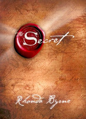

Son günlerin moda kitabı (gerçi biraz eskidi ama) The Secret’ı bende okudum. Rhonda Byrne tarafından kaleme alınan kitap, milyonlarca insana mutluluk getirmek için (!) yazarlar, öğretmenler, film yapımcıları, tasarımcılar ve yayıncılardan oluşan muhtşem (!) bir ekibi bir araya getirmiş. The Secret aslında sadece bir kitap değil, belgesel (!) aslında.
Kitabın temeli “çekim yasası"na dayanıyor. Temel felsefe “iyi düşün, iyilik yap, mutlu ol"üzerine kurulu ki zaten binlerce yıldır tüm dinlerin kaynağını oluşturan temel düşünce bu. Kitabı okudukça yazar ve öğretmenlerin (!) The Secret ile neyi kastettikleri yavaş yavaş açığa çıkıyor.
Kitabın hemen başında yer alan M.Ö. 3000 (!) yıllarından kalma olduğu söylenen Zümrüt Tablet (Emerald Tablet) aslında Ἑρμῆς ὁ Τρισμέγιστος (Hermes Trismegistos)‘a atfedilen latince kriptik bir metinin 2. satırından alınma. Hermes Trismegistos, Mısır tanrısı Thoth ile Yunan tanrısı Hermes’in synkretism yoluyla birleştirilmesi sonucu erken hristiyanlık çağında ortaya çıkmış bir tanrı, aynı zamanda Erken Hristiyanlık döneminde (100 - 400 ?) yaşamış Mısır’lı bir bilgenin adı.
The Secret’ı (Sır’ı) bilen ve uygulayanlar olarak verilen isimlerin büyük çoğunluğu mason …. Yani bulundukları konumlara sırrı bildikleri için değil, mason oldukları için gelmiş kişiler…
“Sırrı bilmek size öncelikle para, sonra güzellik/yakışıklılık getirecek, bunlara sahip olunca zaten mutlu olacaksınız” diyen kitap mutluluğu sadece maddiyata bağlıyor. Buna hiç şaşırmadım, sonuçta 21.yüzyıl tüketim toplumunun içinde yaşıyoruz. “Hayatta ulaşamayacağınız maddi şeyler varsa (ev, araba, güzellik/yakışıklılık) ve bunlara asla sahip olamayacaksanız üzülmeyin, sahip olmuş gibi yaparak (visualization) kendinizi kandırın ve mutlu olun !” “Şükretmek, enerjinizi yönlendirerek isteklerinizi daha çok hayata geçirmenizi sağlayan etkili bir süreçtir. Sahip olduklarınız için şükrettikçe daha çok iyilik ve güzelliği kendinize çekeceksiniz.” “Hayatınıza daha çok para getirmek için, para verin ! Para konusunda cömert davranıp, paylaştıkça mutlu olursanız; ‘Çok param var’ mesajını vermiş olursunuz.” - bunun üzerine söyleyecek birşey bulamıyorum…
The Secret’ı yazanların gerçekten bir sırrı bildikleri ortada. Sır öğretmenlerinden Avustralyalı yatırım uzmanı David Schirmer üstadın (!) müşterilerinin paralarını çaktırmadan kendi hesabına geçmesiyle ayyuka çıkan sır (aslında sır falan değil bu).
“Cahil insanları güzel bir masal anlatarak uyut, ceplerindeki parayı son kuruşuna kadar al !”
Adolf Hitler “Büyük kitleleri kandırmak, küçük toplulukları kandırmaktan çok daha kolaydır” diye boşuna söylememiş…